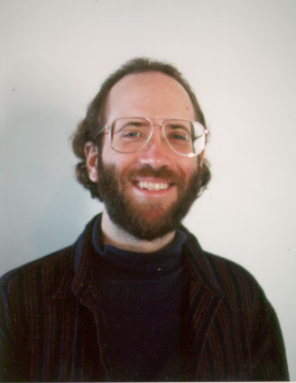

http://www.cs.ust.hk/~horner/
horner@cs.ust.hk
Andrew Horner is an assistant professor in the Computer Science Department at the
Hong Kong University of Science and Technology, where he co-chaired the 1996
International Computer Music Conference. He received his Ph.D. in Computer
Science from the University of Illinois at Urbana-Champaign, where he worked in
the Computer Music Project, CERL Sound Group, Center for Complex Systems, and
Illinois Genetic Algorithm Laboratory. His primary research interests are in
applying artificial evolutionary techniques to sound computation and
computer-assisted composition.
Andrew Horner
Department of Computer Science
Hong Kong University of Science and Technology
Clear Water Bay, Kowloon
Hong Kong